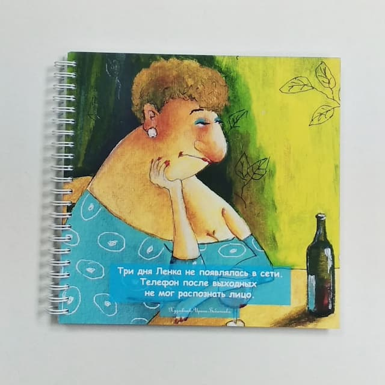
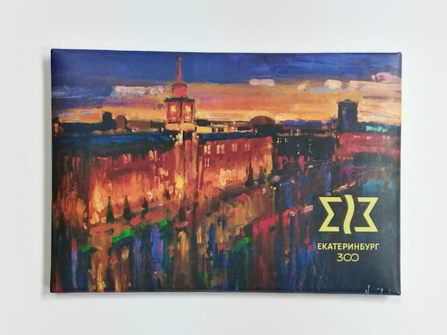
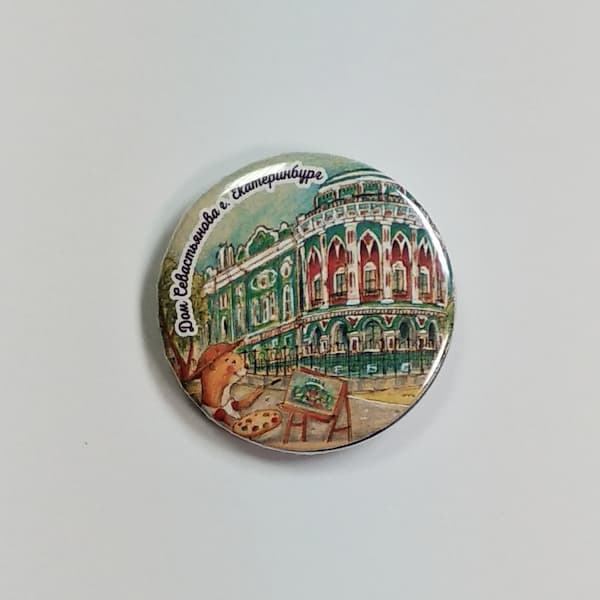
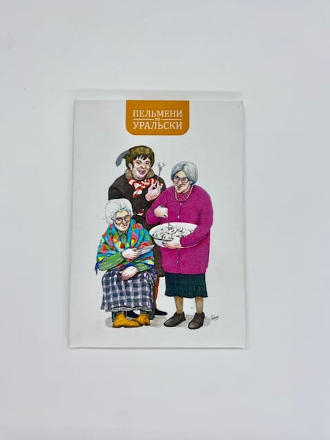

Сувенирная продукция ИПК «Лазурь»: Искусство и вдохновение от талантливых художников

В типографии ИПК «Лазурь» мы понимаем, что сувенирная продукция — это не просто товары, а настоящие произведения искусства, которые могут передать атмосферу и дух нашего города, а также мест, в которых мы представляем нашу продукцию. Именно поэтому мы активно сотрудничаем с различными художниками, которые создают уникальные иллюстрации, вдохновляясь как знакомыми, так и малоизвестными достопримечательностями.

Каждый художник приносит в работу свой индивидуальный стиль и видение, что позволяет нам предлагать разнообразие сюжетов и цветовых решений. От ярких и жизнерадостных пейзажей до тонких и детализированных изображений — каждый сувенир рассказывает свою историю. Мы убеждены, что такие работы не только радуют глаз, но и вызывают теплые воспоминания у тех, кто когда-либо посещал эти места.

Важным аспектом нашего сотрудничества является то, что все права на использование рисунков выкуплены у художников. Это позволяет нам гарантировать высокое качество и законность использования их творений. Мы гордимся тем, что можем поддерживать талантливых авторов, обеспечивая им достойное вознаграждение за их труд и вдохновение.

Таким образом, сувенирная продукция ИПК «Лазурь» — это не просто товары, а настоящие культурные артефакты, которые соединяют людей с их воспоминаниями и чувствами. Мы продолжаем развивать наше сотрудничество с художниками, открывая новые горизонты для творчества и вдохновения. Как результат, каждый наш сувенир становится уникальным произведением искусства, которое может стать частью вашей коллекции или подарком для близких.